Parity is a simplified and local description of a chiral center. It is used for string the three dimensional arrangement of the ligands around a chiral center in a local canonical way without using the Cahn-Ingold-Prelog priority rules. The ligands of the chiral center are numbered according to the atom indexes in the molecule. If the atom has implicit Hydrogen, then this implicit Hydrogen atom is considered to be the highest numbered atom. The tetrahedral center atom is viewed such a way that the highest-numbered atom is behind the plane formed by the other three atoms. The three atoms can be arranged in either a clockwise or counterclockwise direction in ascending numerical order.
| 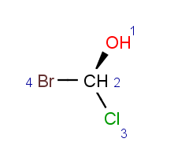 | 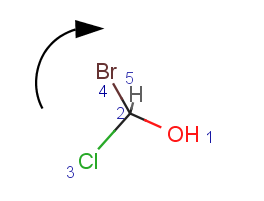 |
TetrahedralStereoValue.ODD |
|
Parity value TetrahedralStereoValue.ODD is assigned for a
clockwise arrangement at the stereo center and
TetrahedralStereoValue.EVEN for
counterclockwise. If the center has wiggly (wavy) bond then
TetrahedralStereoValue.WIGGLY value is assigned,
otherwise if
the given information is not enough to decide the spatial arrangement (e.g. no wedges in two dimensions)
TetrahedralStereoValue.UNKNOWN value is assigned.
| 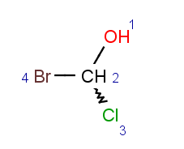 | 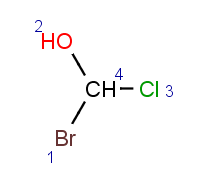 |
TetrahedralStereoValue.WIGGLY |
TetrahedralStereoValue.UNKNOWN |
Hindered rotation around single bonds where the steric strain barrier to
rotation is high enough to allow the isolation of the conformers resulting in
atrop stereoisomerism.
Atrop stereo descriptor represents the topology of the case when two aromatic
rings connected by a single bond with at least three ortho ligands.
We look at the molecule in the direction of the single bond between the two aromatic rings (axis). On the example shown below the red arrow indicates the direction of the view.
The axis is looked at from the direction where the highest indexed ligand connected to the axis (atom index 12) is behind the axis.
The angle between two bonds connecting the highest indexed ligands on both sides to the axis is
considered. On the example these are the bond between atoms 5 (marked blue) and 6 (in front of the axis)
and the bond between atoms 12 (marked green) and 7.
AtropStereoValue.EVEN means that the angle is positive (between 0 and Pi).AtropStereoValue.ODD means that the angle is negative (between 0 and -Pi).AtropStereoValue.UNKNOWN means that the angle is near 0 or Pi (5° threshold), or not defined
(2d structure without wedge information). AtropStereoValue.WIGGLY means that either the axis, or any of the bonds in the rings connected
to the axis is WIGGLY.If two stereoactive atoms (atoms with at least three different ligands) are connected by an even numbered chain of rigid parts then axial stereo information can be defined on the ligands of the stereactive atoms. These ligands are the ones which are not in the chain of the rigid part.
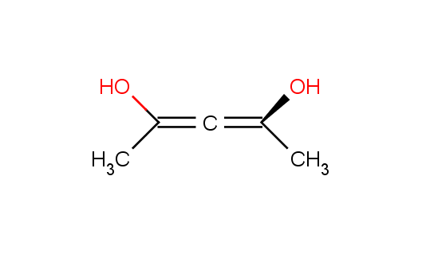Here we consider the chain of rigid parts as an axis. Number the ligands at the end of the chain according to their atom indices. Implicit hydrogen is got the lowest number, -1. The axis is looked at from the direction where the highest indexed ligand connected to the axis is behind the axis. On the example below the axis is formed by the bonds between atoms with indexes 1 and 3. The red arrow indicates the direction of view.
| 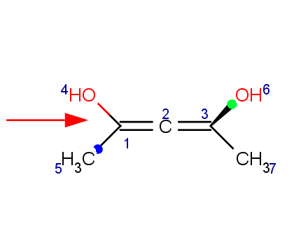 |
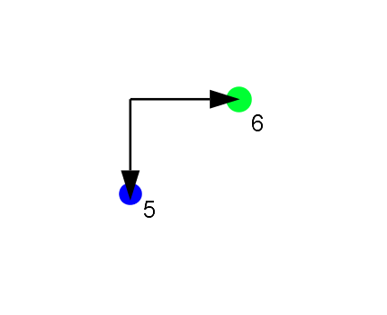 |
AxialStereoValue.EVEN means that the angle is positive (between 0 and Pi).AxialStereoValue.ODD means that the angle is negative (0 and -Pi).AxialStereoValue.UNKNOWN means that the angle is near 0 or Pi (5° threshold), or not defined
(2d structure without wedge information). AxialStereoValue.WIGGLY means that any of the non-rigid-part-bonds connected to any of
the stereoactive atoms is WIGGLY.In general, single bonds are rotatable, but double bonds are not. If the substituents on each side of the double bond are different then two diastereomers of the molecule can be distinguished based on the orientation of the ligands. Two substituents located on the same side of the reference plane defined by the double bond are referred to as cis isomer, otherwise, if the two substituents are located on the opposite side of the reference plane then it is referred to as trans isomer.
| 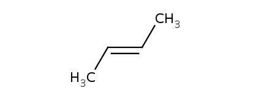 | 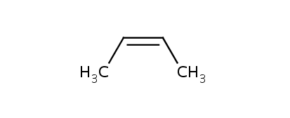 | ||
CisTransStereoValue.TRANS |
CisTransStereoValue.CIS |
Alicyclic compounds can also display cis-trans isomerism. In this case the so called rigid part becomes non- rotatable due to the constrain of a cycle.
| 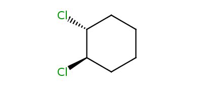 | 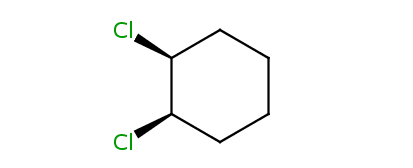 |
| trans-1,2-dichlorocyclohexane | cis-1,2-dichlorocyclohexane |
The rigid part is represented by the atoms and bonds of the outer hull. The outer hull is detected as the symmetrical difference of all ring bonds contained in the system. The hull of a rigid part is marked green on the following example. There is always an opposite atom for each contained atom in a rigid part, e.g. atom 13 is the opposite of atom 17 on the example.
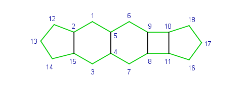The same ring can be contained in more than one rigid system (e.g. all six-six membered ring pairs are detected as two separate six membered rings as well). On the example below the red ring and the blue ring are detected as rigid parts (their common bond is purple) as well as the union of the two fused rings (marked with thicker bonds).
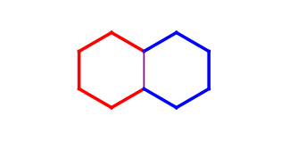Stereo active part of a molecule is an atom with 0 to 4 ligands that can have tetrahedral stereo information, or with another stereo active part CIS/TRANS, ATROP or AXIAL stereo information.
Stereo centers with more than 4 connections are not supported yet.
The following example demonstrates how to use the CIPStereoRecognizer and the equals/equalsTo methods. Under the code, you can find the two molecules (m1 and m2).
//read or build the molecules
Molecule m1, m2;
/* ... */
int[] map = { 2, 1, 3, 0 };
Collection<CIPStereoDescriptor> descriptors_m1 = CIPStereoRecognizer.calculateCIPStereoDescriptors(m1);
Collection<CIPStereoDescriptor> descriptors_m2 = CIPStereoRecognizer.calculateCIPStereoDescriptors(m2);
CIPStereoDescriptorIface desc1 = (CIPStereoDescriptorIface) descriptorArray_m1.toArray()[0];
CIPStereoDescriptorIface desc2 = (CIPStereoDescriptorIface) descriptorArray_m2.toArray()[0];
System.out.println(desc1.equals(desc2)); //false
System.out.println(desc1.equalsTo(desc2, map)); //true
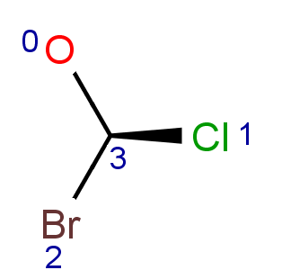
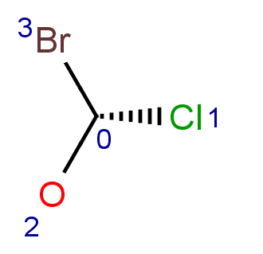
|
Introduction to Stereochemistry |
Stereoisomers around double bond |